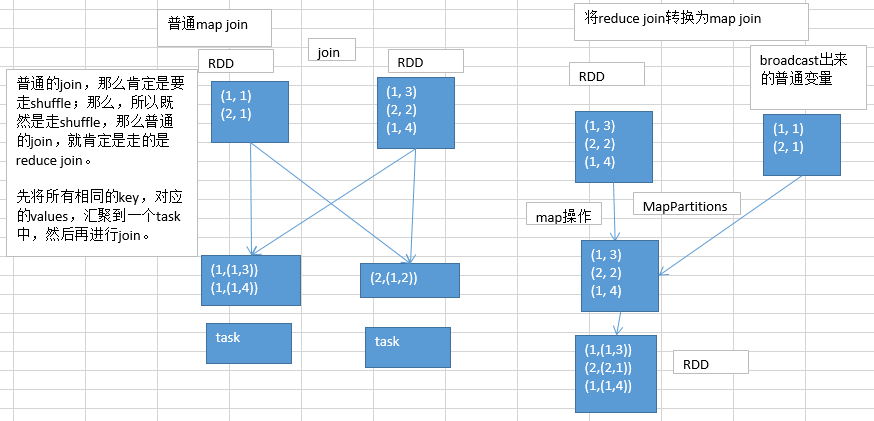

31.数据倾斜解决方案之将reduce join转换为map join

reduce join转换为map join，适合在什么样的情况下，可以来使用？
如果两个RDD要进行join，其中一个RDD是比较小的。一个RDD是100万数据，一个RDD是1万数据。（一个RDD是1亿数据，一个RDD是100万数据）
其中一个RDD必须是比较小的，broadcast出去那个小RDD的数据以后，就会在每个executor的block manager中都驻留一份。要确保你的内存足够存放那个小RDD中的数据
这种方式下，根本不会发生shuffle操作，肯定也不会发生数据倾斜；从根本上杜绝了join操作可能导致的数据倾斜的问题；
对于join中有数据倾斜的情况，大家尽量第一时间先考虑这种方式，效果非常好；如果某个RDD比较小的情况下。
不适合的情况：
两个RDD都比较大，那么这个时候，你去将其中一个RDD做成broadcast，就很笨拙了。很可能导致内存不足。最终导致内存溢出，程序挂掉。
而且其中某些key（或者是某个key），还发生了数据倾斜；此时可以采用最后两种方式。
优先map join
对于join这种操作，不光是考虑数据倾斜的问题；即使是没有数据倾斜问题，也完全可以优先考虑，用我们讲的这种高级的reduce join转map join的技术，不要用普通的join，去通过shuffle，进行数据的join；完全可以通过简单的map，使用map join的方式，牺牲一点内存资源；在可行的情况下，优先这么使用。
不走shuffle，直接走map，是不是性能也会高很多？这是肯定的。
List<tuple2<Long,Row>> list = Rdd.collect;
sc.broadcast(list)
// 后续从broadcast中取出，进行map或者其他操作。